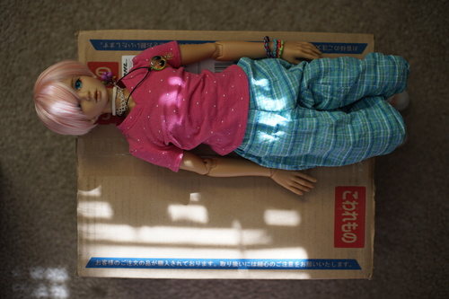
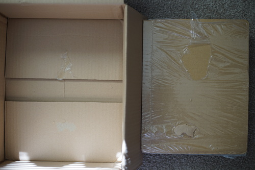
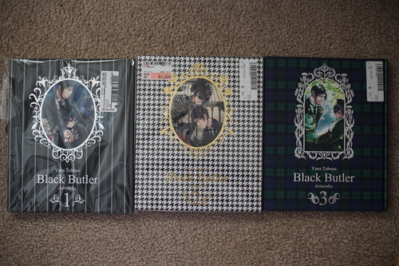
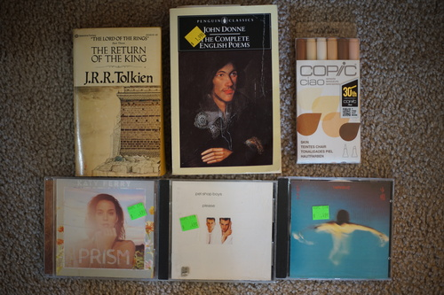

After the absolutely traumatic experience of having someone buy a Yana Toboso illustration book from my suruga-ya cart (this gave me PTSD), Ryan told me to just buy it as soon as I saw it next time with free shipping. I went back a few days later and 3 out of 4 Yana Toboso illustration books were there!!!
Order stats: Total: $61.06 USD including tip. Ordered 6/3, shipped 6/6, arrived 6/10. This time I didn't mess up typing my email.
I got the branded box this time. Verona for scale.
Mysterious packing method of shrink wrapping the books to a piece of cardboard and gluing the bundle to the bottom of the box. It got loose and there are holes in the box where the corners of the book hit. The corners of the top book look fine, but aren't perfect. I didn't expect my used Japanimation books to come in perfect shape though.
All of these are hardcover with full color illustrations. There's a few inside that were only drawn black and white. At the end of each book, she has collab art she's done for other series. For some reason, there are ribbons to tie the books shut. Cute but.... annoying.....
All of them have a few fingerprints. Book 3 is in the worst condition due to dents in the bottom of the book, but better condition than any book to come new from Amazon.
I really like owning these illustration books. Black Butler was a fun read, but the money and space commitment of 31+ tankoban volumes is... big.... I really do like Toboso's story and jokes, so I still might do it someday, but the best part is her illustrations of Sebastian, so I'm very happy with these! Sebastian is the best!! Since I have both now, I'll give you some quick info on the Black Butler Line Drawing Works. A good portion of the first half of book 3 is in the line drawing works, but not all illustrations.
I actually went and updated my MFC account after this! I found it was a little easier to figure out what to buy using their database rather than a vague title on Suruga-ya. The wishlist feature is annoying because it'll send you a notification every time someone lists something for sale, but I'll use it anyway. I removed all the figures from my wishlist so hopefully no one will start listing art books.
I removed my birthdate on the site a few years ago and it won't let me see R18 anymore. Good thing?? Bad thing??? I guess I will know which Lily Hoshino books are clean now.
I JUST bought this pack on clearance for $15 a week earlier and already threw away the package. These markers weigh the same in grams as my brand new and unused markers. At least these are highly used colors.
This is what China sounds like. Probably.
"THIS IS NOT A GAME"
A gift for Ryan's imouto.
big bowl for my big appetite
I think Pride of Mind took inspiration for the track "Love Light (I Feel Your Breath)" from the track "Twisted" on this single. I'm gonna need to find some more of these guys.
Japanese release of a Seattle no one band?? I can't find this CD on discogs. The styles of songs on this album are all over the place.
I was waiting for the guy to tell me it's $25 but he said $10. Very annoying they didn't include this one on the Mario Switch 3 pack a few years ago, but now I own it (and 2 copies of Super Mario Galaxy Wii).
I ran out of cash but Ryan was nice enough to buy it for me. Visit their site www.pinupgirlclothing.com and use my code GRUSHAISPOGGERS for a 20% off discount!
Someone should tell me why my Sega CD Snatcher plays static instead of music part of the time.
I found something REALLY cool at the thrift store! Someone had donated an unopened Cintiq 24HD touch. The shipping box was MASSIVE, like bigger than a large sized mini fridge box. It was marked at $899 with a print out on the top saying the going price was $2700 on Amazon. Unfortunately, they were looking at the current model and not the DTH2400 manufactured in 2012. It would have been a very cool buy if it had been priced less than $300. I hope no one is dumb enough to buy this from them.